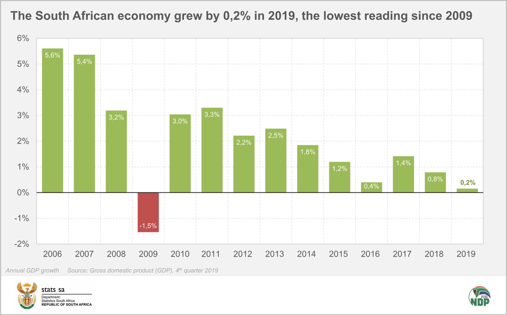
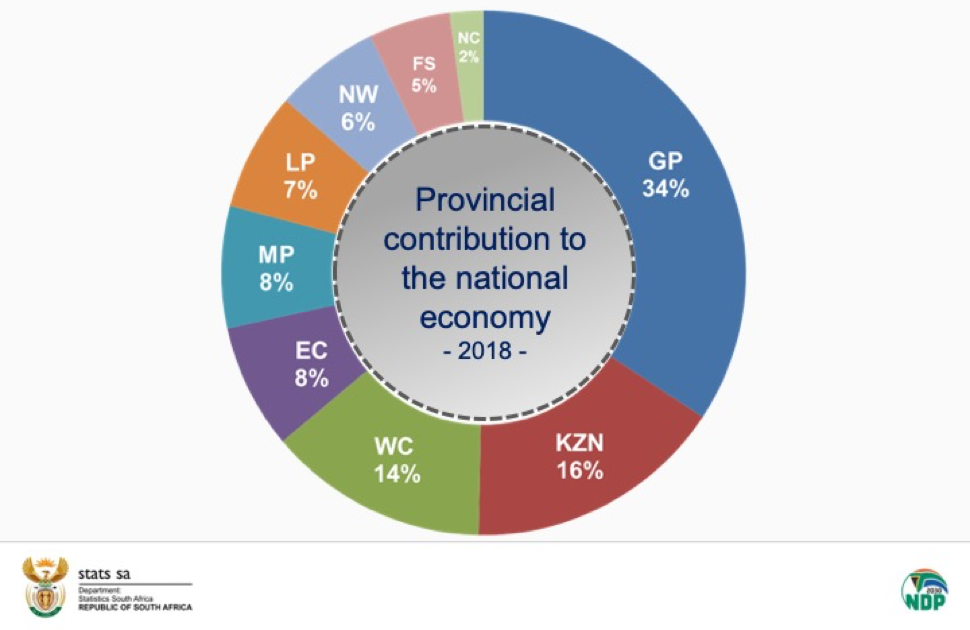
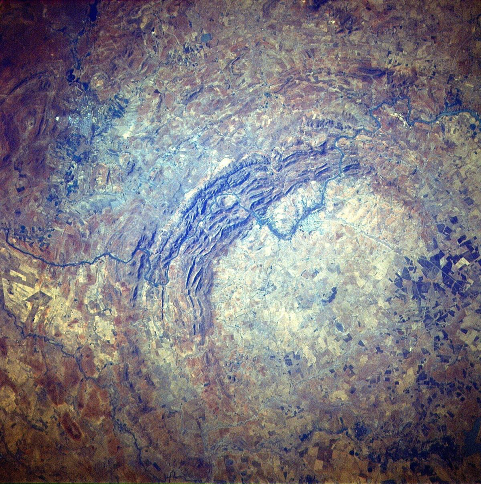
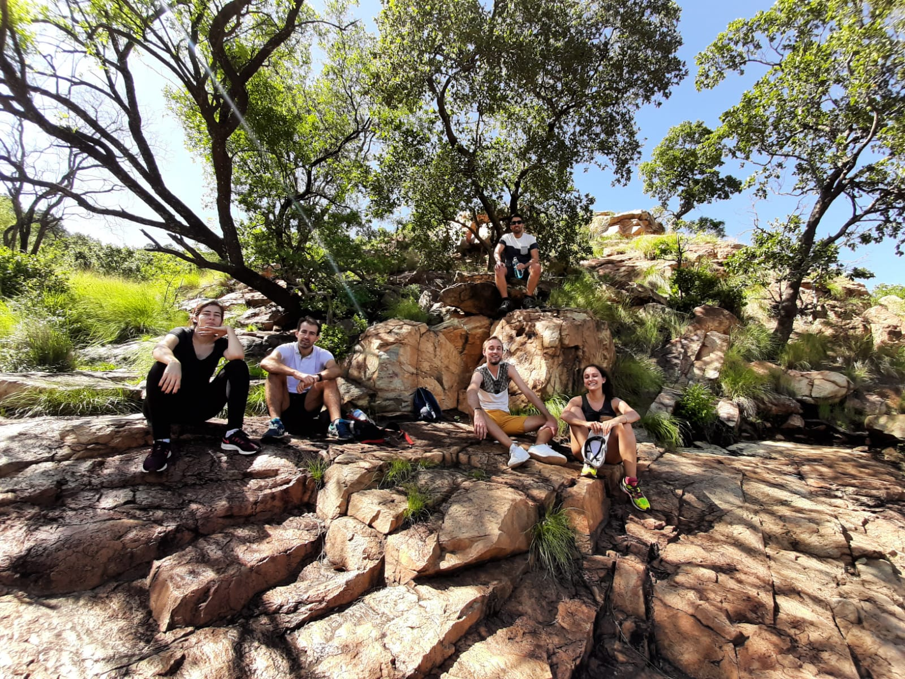
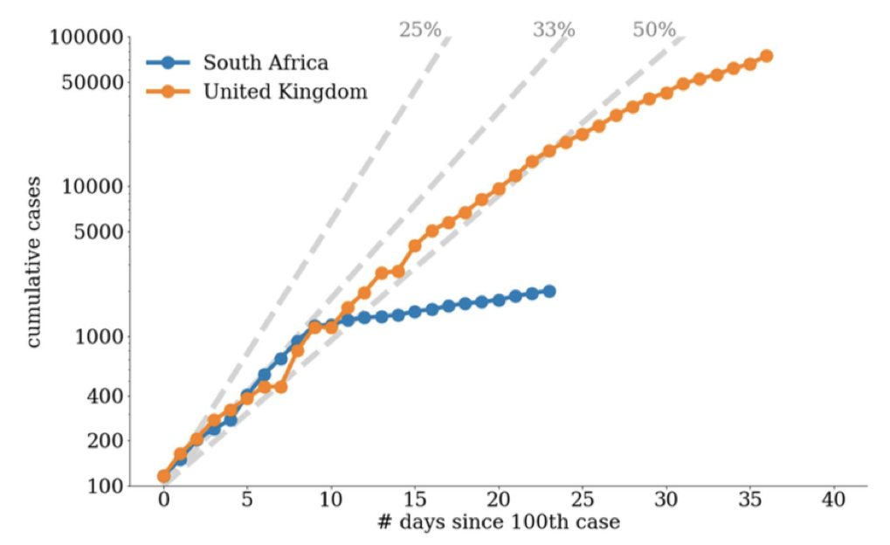
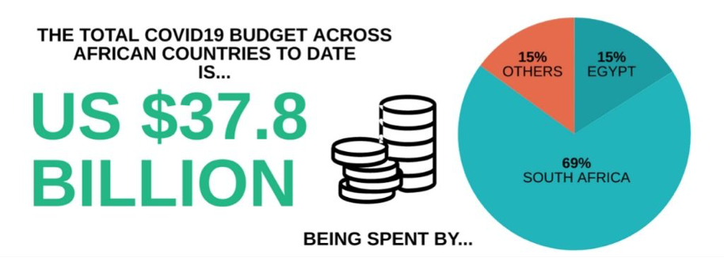
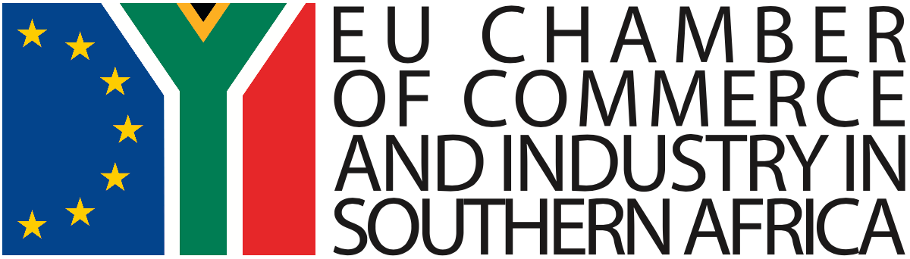
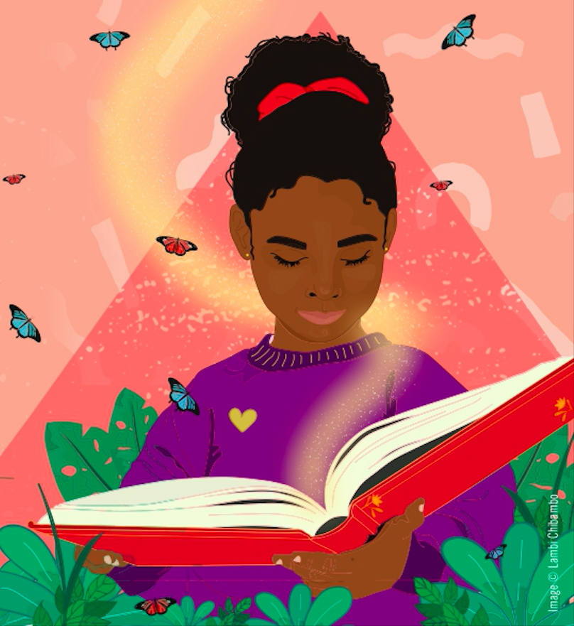

Publié le 17 mai 2020
Ces derniers mois furent compliqués pour tout le monde, et particulièrement pour l’Afrique du Sud.
Récession
Début mars, les chiffres de la croissance du dernier trimestre 2019 tombent. L’Afrique du Sud enchaîne un second trimestre consécutif avec une croissance négative et entre officiellement en récession. En 2019, la croissance reste positive néanmoins. Cela dit, le graphique ci-dessous ne montre pas un pays qui va pour le mieux économiquement.

Je donne une courte interview pour BBC Afrique expliquant les principales raisons de ces résultats décevants et sur les implications concrêtes. Encore une fois, la raison principale est à chercher dans les défauts à répétition d’Eskom, principal fournisseur d’énergie, incapable de répondre à la demande des entreprises. En décembre, des pannes à répétition ont pénalisé de nombreuses entreprises. Certaines installent des panneaux solaires sur leur toît pour tenter de compenser voire d’être autonome. Mais cela coûte cher. Récemment, un projet de loi va leur permettre de revendre leur electricité sur le réseau public, ce qui devrait favoriser le développement de ces générateurs privés.
Pour ceux que ça intéresse, ci-dessous, la contribution géographique des principales régions au PIB. Le Gauteng (région de Johannesburg) est devant le KwaZulu-Natal (avec notamment le port de Durban) et Western Cap (région de la ville du Cap).

Certains secteurs sont en difficultés (transport, communication, électricité, eau et gaz) mais d’autres restent dynamiques (aide à la personne, finances, mines) et les prévisions pour 2020 restent optimistes, notamment avec le nouveau plan de redressement d’Eskom.
Début mars, nous sommes loins d’imaginer qu’une crise d’une grande ampleur approche.
Parys sera toujours Parys
Mi-mars, nous partons pour un dernier week-end de randonnée avant longtemps avec des amis français : Franck qui travaille au Consulat et Victoire la ponote, deux amis avec qui j’ai déjà fait un week-end de randonnée au Blyde Canyon il y a quelques mois. S’ajoutent à notre petite équipe Cécile, qui travaille pour l'institut de recherche pour le développement (IRD) et son compagnon Pierre qui travaille pour l’AFD au Zimbabwe.
Parys est une ville située à moins de deux heures au sud de Johannesburg. Petit clin d’œil, il y a une tour Eiffel, d’environ 5m de haut.
Il y a plus de 2 milliards d’années, une météorite de 10 km de diamètre s’est écrasée ici, créant un cratère d’environ 300 km de large. À cette époque, les seuls êtres vivants étaient probablement des sortes d’algues. « Le dôme de Vredefort est la structure d’impact de météorite la plus ancienne, la plus grande et la plus profondément érodée du monde. Il s’agit du phénomène de libération d’énergie le plus important du monde » (site de l’Unesco). Pour vous donner une comparaison, c’est deux fois plus gros que l’impact qui a provoqué l’extinction des dinosaures il y a 65 millions d’années. C’est pour cela que ce site est classé au patrimoine mondial de l’Unesco.

(Sur cette photo aérienne, on voit la chaîne de montagnes en croissant, formée par l’impact de la météorite, dans laquelle nous avons fait de la randonnée.)
On se promène non loin du cratère dans une randonnée très longue, mal indiquée, censée passer par une jolie cascade, malheureusement asséchée ce jour là. Cette dernière sortie nous permet de profiter de la nature, et de prendre des couleurs, avant une longue période d’enfermement.

Le coronavirus en Afrique du Sud
L’Afrique n’est pas épargnée par l’épidémie du coronavirus. L’Afrique du Sud a été touchée beaucoup plus tard que la France et a pris très tôt des mesures drastiques sur le plan sanitaire et sur le plan du soutien de l’économie.
Dès le 15 mars (61 cas, zéro décès), Cyril Ramaphosa annonce la fermeture des écoles. Le 24 mars (554 cas, zéro décès) il annonce un confinement complet, plus sévère qu’en France. Tous les magasins sont fermés sauf ceux vendant de la nourriture. L’alcool est interdit à la vente ce qui, espérons-le, aura un impact positif sur les violences conjugales dans cette période où des familles entières apprennent à vivre ensemble 24h/24 et 7jours/7, souvent dans des espaces restreints.
La situation sanitaire :
Les premières semaines, le très faible nombre de test réalisé nous fait craindre le pire sur la réalité de l’épidémie. Les tests, en faible quantité, étaient payants donc personne n’allait se faire tester. Le système de santé sud-africain est correct, mais comme dans les autres pays, il serait incapable de gérer un afflux massif de patients en réanimation.
Mais, et c'est valable pour tout le continent africain, alors que le pire était redouté,l’épidémie se propage finalement assez lentement et les taux de mortalité sont bien plus faibles qu'en Europe.
Cette lente progression est principalement dû à l’organisation de la vie sociale ici, très tournée vers le noyau familial et peu vers l’extérieur. Les gens ne sortent pas dans la rue ou au restaurant, les lieux de socialisation et de contacts sont très rares. Le point préoccupant, c’est que plus de 12% de la population est atteinte du Sida, un adulte sur cinq.
L’Afrique du Sud reste néanmoins le pays le plus touché du continent, car le plus ouvert aux échanges.

Deux articles expliquant pourquoi l’Afrique en général, et l’Afrique du Sud en particulier, s’en sortait mieux que d’autres pays (notamment européens) ont attiré mon attention.
The Economist parlait de deux leçons tirées par l’Afrique du Sud de la lutte contre le sida: (1) Faire confiance à la science et agir vite (le gouvernement justifie toutes les décisions prises en s’appuyant sur les connaissances scientifiques, frappant contraste avec le précédent Président MBeki). (2) Réaliser des tests à grande échelle pour avoir une connaissance de l'évolution de l'épidémie et des circuits d'infection.
La revue Futura sciences est allée beaucoup plus loin. Voici quelques-unes des principales raisons de la « bonne santé » du continent africain (listées dans l'article) :
- L'épidémie a touché l'Afrique après l'Europe, permettant d'adopter des mesures préventives en amont.
- Avec 43 habitants par kilomètre carré (181 en Europe de l'Ouest, 154 en Asie du Sud-Est), l'Afrique demeure un continent faiblement peuplé. De nombreuses régions africaines restent très isolées et vivent en quasi-autarcie. Sur les 50 aéroports les plus fréquentés au monde, un seul est africain (celui de Johannesburg).
- Environ 60 % de la population africaine est âgée de moins de 25 ans. Or, le coronavirus frappe plus particulièrement les personnes âgées (en France, 75 % des personnes décédées du Covid-19 ont plus de 75 ans).
- L'Afrique présente un très faible taux d'obésité, facteur de risque majeur de mortalité.
- Une étude montre que plus un pays est affecté par la malaria (93% des cas en Afrique) moins il est touché par le Covid-19. D'après une autre étude, c'est la vaccination systématique du BCG déployée en Afrique qui pourrait expliquer l'immunisation de la population.
La situation économique :
Les effets sur l’économie, eux, se font rapidement sentir et inquiètent dans un pays qui entrait en récession quelques semaines avant le début de l’épidémie. Les optimistes diront que cela va enfin contraindre l’Afrique du Sud à lancer des réformes en profondeur, s’attaquer au problème de la corruption et faire disparaitre des entreprises d’Etat gérées de manière désastreuse. Le ministre des finances, Tito Mboweni, plutôt réformiste, souhaitait demander de l’aide au FMI le plus tôt possible. Son parti, l’ANC, s’y est opposé.
Le gouvernement a annoncé très tôt qu’il consacrait un budget spécial pour lutter contre le coronavirus et ses impacts économiques. Ce budget s’élève à 500 Milliards de Rands (26 Milliards US$) soit 7,1% du PIB. Il y a 15 jours, le Gouvernement a annoncé qu’il pourrait être porté à 800 Milliards de Rands.

(Chiffres en date du 27 avril)
Pour vous faire une idée de l’écart avec les autres pays, la Namibie (4,2%), le Maroc (2,7%) et le Lesotho (2,3%) sont les 3 seuls autres pays à consacrer un budget spécifique de plus de 2% du PIB à la lutte contre le coronavirus. En valeur absolue, l’Afrique du Sud (26 Milliards US$) devance l’Egypte (6 Milliards US$) et le Nigeria (1,4 Milliard US$)
Confinés
Avant même le début du confinement, je suis bloqué à la maison. Selen rentre d'un séjour en France début mars et les règles applicables à mon lieu de travail – un open-space avec des entreprises et trois chambres de commerces et d’industrie, française, hollandaise et belge – m’imposent de rester en quarantaine pendant deux semaines à son retour. L’épidémie n’est pas encore arrivée en Afrique du Sud à ce moment-là, il s’agit surtout de protéger les autres.
Pendant cette période, beaucoup de temps gagné en déplacements. Levé à 7h, boulot à 7h30 après avoir petit-déjeuné. Tous les jours, je vais à la salle de sport de l’immeuble, en prenant le soin de tout nettoyer avant et après.
Le 24 mars donc, le Gouvernement annonce un confinement strict de trois semaines (il sera prolongé évidemment). Coup dur, la salle de sport de l’immeuble ferme ses portes et il est interdit de sortir. Désormais, je vais devoir courir comme un idiot dans notre cage d’escalier, qui fait 20 étages, ou en faisant des allers retours dans le parking de l’immeuble.
On reçoit une livraison de fruits et légumes chaque semaine et pour le reste nous faisons les courses de temps en temps au supermarché à 10 min de la maison, sans avoir le droit de marcher à côté. Je découvre la bière sans alcool. Sympa. Nous revenons chargés comme des mules, avec mon sac de randonnée.
Sur notre chemin, un peu plus de mendiants que d’habitude, on donne quelques denrées alimentaires, comme beaucoup d’autres. La crise frappe de manière très violente les populations les plus démunies, dans un pays où les inégalités sont criantes.
Avec Selen, nous avons la chance de pouvoir réaliser notre travail et manager nos petites équipes à distance sans trop de difficultés. Sans réel bureau, on télé-travaille depuis nos canapés, en nous isolant pour nos réunions téléphoniques.
Même si l’on bosse beaucoup, le confinement permet de dégager un peu de temps, qu'on répartit entre sport, films, cuisine, lectures, rien de très original. J’en profite aussi pour apprendre l’italien, 1h par jour, projet que j’avais en tête depuis quelques mois.
Nous vivons dans un appartement avec de grandes baies vitrées, ce qui donne la légère impression d’être deux poissons dans un bocal. Mais au moins, on ne manque pas de soleil (on est orienté plein nord et dans l'hémispère sud, le nord c'est l'équivalent du sud dans l'hémisphère nord, vous suivez ?). Le matin ou le soir, pause sur la terrasse au sommet de l’immeuble pour respirer un peu d’air frais et admirer la ville, à l’arrêt.
J’imagine que tout le monde vit un confinement très différent, selon son appartement, sa vie familiale, son travail, son caractère. Le vélo et la piscine me manquent. Mais je reprends contact avec des amis, je lis et je travaille furieusement pour réussir la mission qui m’a été confiée.
EU Chamber

Je suis désormais pleinement investi dans la mission de créer une nouvelle chambre de commerce européenne ici. Si l’on réussit collectivement cette épreuve délicate, la Chambre européenne aura un avenir, en Afrique du Sud, mais aussi au-delà, dans la région qu’on appelle « Southern Africa ». Mais il reste un long chemin à parcourir.
Début mars, première occasion de démontrer l’utilité d’une chambre européenne. Avec le soutien de la Délégation européenne et l’appui des chambres bilatérales, nous organisons un débat sur le Green Deal avec Franz Timmermans (Vice-Président de la Commission Européenne), Ebrahim Patel (Ministre du commerce et de l’Industrie sud-africain) et une sélection de 20 CEO de grosses boites européennes (Total, Saint-Gobain, Air France, Bosch, Mazars, Siemens…).
La réunion se passe plutôt bien, mais lors des échanges, un membre du board s’adresse de manière très irrespectueuse au ministre Patel. Dans les jours qui suivent, certaines chambres bilatérales en profitent pour tirer une nouvelle fois sur le board actuel de la chambre européenne. Résultat, de nouvelles crispations et de nouveaux antagonismes. La mission délicate qui est la mienne devient quasi-impossible.
Quelques jours plus tard, nous publions un papier (« position paper ») dans une revue économique sur le sujet. Cela démontre vraiment la force de frappe que peut avoir une chambre européenne par rapport aux chambres bilatérales, qui n’ont pas du tout le même rôle. Il aurait été impossible pour une chambre bilatérale d’avoir un ministre autour de la table et de publier dans une revue économique. La chambre européenne devra se concentrer sur ce type de missions : influence politique, négociation avec les ministères, publications économiques sur des sujets divers (économie verte, climat des affaires, immigration, santé…).
Fin mars, nous adressons un document de 50 pages en réponse à une consultation lancée par le Ministère de l’Energie concernant le développement des énergies renouvelables (cela crée d'ailleurs quelques tensions entre les Français et les Espagnols). Nous accompagnons aussi le département du commerce et de l’industrie dans l’élaboration des mesures de soutien à l’économie.
Sur le plan de la communication, on remet tout à plat, nouveau site internet, nouvelle charte graphique, reprise en main des réseaux sociaux, relations presse, circuits d’influence et de diffusion.
Mais ce qui me prend le plus de temps, ce sont les négociations avec les chambres bilatérales d’une part et avec les membres du board d’autre part. Mi-mars, avant le début du confinement, j'obtiens l’accord des français et des allemands sur l'essentiel. Ils doivent être les moteurs de la future chambre. Je peux enfin lancer un grand meeting pour discuter longuement des quelques grandes orientations encore non consensuelles.
Malheureusement, le meeting est annulé en raison du coronavirus et compte tenu du nombre de participants (une cinquantaine), nous décidons de ne pas le tenir par visioconférence. Le calendrier est donc totalement chamboulé et on perd plus d’un mois. Le chemin est long mais il en vaut la peine. Voici un petit récapitulatif de mon quotidien depuis quelques semaines et des étapes qui sont devant nous :
- Février : (1) Discussions informelles avec les membres du conseil d’administration, les chambres bilatérales, les représentants de la délégation européenne et les entreprises ;
- Mars : (2) Diffusion de la présentation des grandes lignes du nouveau modèle à toutes les parties prenantes. (3) Discussions structurées avec les chambres bilatérales
- Avril : (4) Conseil d’administration : discussion sur les points litigieux. (5) Conseil d’administration : discussions finales et accord trouvé sur le modèle. (6) Rédaction d’un résumé des nouveaux statuts. (7) Validation par le board du résumé des nouveaux statuts.
- Mai : (8) Diffusion aux 9 chambres bilatérales du résumé des nouveaux statuts. (9) Retours des chambres bilatérales. (10) Conseil d’administration : discussion sur les retours des chambres bilatérales. (11) Rédaction finale des nouveaux statuts. (12) Convocation de l’Assemblée générale pour modifier les statuts et diffusion des nouveaux statuts aux chambres bilatérales.
- Juin : (13) Accord formel des boards des 9 chambres bilatérales. (14) Assemblée générale : vote des nouveaux statuts.
- Juillet : (15) Election par chaque chambre bilatérale de son représentant au conseil d’administration. (16) Installation du nouveau conseil d’administration.
Pour le moment, c’est difficile. Les relations entre les chambres et le board sont très tendues, et on doit éteindre des incendies tous les jours. Mais j’ai la confiance de tout le monde et les choses avancent (très) lentement mais sûrement. Je rencontre des gens intéressants de toutes les nationalités et j’apprends énormément.
Le travail de Selen (rédigé par Selen):
Cela fait maintenant sept mois que j’ai pris mes fonctions d’attachée culturelle de l’ambassade de France en Afrique du Sud. C’est un poste extrêmement stimulant, un tantinet obscur pour ceux qui sont loin du monde de la diplomatie ou du monde de la culture. Pour faire simple, mes fonctions d’attachée culturelle me conduisent à promouvoir la culture française en Afrique du Sud, à créer des collaborations entre les artistes et institutions culturelles en France et en Afrique du Sud, et à soutenir la création sud-africaine notamment en proposant des programmes de résidences d’artistes en France.
Mon portefeuille est assez large puisqu’il va des arts du spectacle (théâtre, danse, musique…) aux arts visuels (peinture, photographie…), en passant par la mode, le débat d’idées, ou encore la gastronomie. Le cinéma ne fait pas partie de mes attributions puisque nous avons la chance d’avoir ici une attachée audiovisuelle, dont le portefeuille comprend le cinéma, la musique dans sa dimension « professionnelle » (contact avec les labels, questions de distribution, droits d’auteur…), les médias, le jeu vidéo, l’animation, entre autres.
Je ne suis que très rarement à l’ambassade (encore moins en ce moment…), puisque mon bureau est situé à l’Institut Français de Johannesburg, qui a la particularité d’être un Institut « hors les murs ». Autrement dit, nous n’avons pas de salle de spectacle et nous ne recevons que très rarement du public, sauf dans notre médiathèque Dibuka qui se trouve... dans les locaux de l’Alliance française (il faut suivre). Notre « programmation », donc, n’est pas la programmation d’un lieu culturel classique. Elle est principalement composée de spectacles ou expositions qui se tiennent dans des institutions culturelles sud-africaines, avec lesquelles nous sommes en partenariat. L’avantage principal est que nous entretenons de bonnes relations avec ces institutions avec lesquelles nous ne sommes pas en concurrence. L’inconvénient majeur est que nous sommes moins visibles pour le grand public.

(Illustration issue de la programmation de la médiathèque Dibuka)
Mon équipe est composée de deux chargées de projet, un médiathécaire, une stagiaire et un volontaire international (VI) partagé avec l’attachée audiovisuelle. Nous travaillons souvent avec notre chargée de communication et notre graphiste qui ne sont pas stricto sensu dans l’équipe culture, mais interviennent de manière systématique sur nos projets. Enfin, l’ambassade a au Cap une attachée de coopération et d’action culturelle, avec qui je suis en lien étroit puisque la vie culturelle au Cap est extrêmement riche et qu’il y a donc beaucoup de contacts à y établir.
Ce n’est pas une surprise, la pandémie actuelle est venue nous frapper très durement puisque tous nos projets ont été annulés ou reportés sine die, avec peu d’espoir d’une reprise prochaine : plus de résidences artistiques, de Fête de la Musique, plus d’itinérance de notre exposition sur la bande dessinée, plus de soirées débats.
C’est pour moi l’occasion de réfléchir à d’autres formes de création et d’accès à la culture, et nous nous recentrons pour cela sur les outils digitaux. Nous avons par exemple commencé à travailler à un projet d’exposition virtuelle, et à un projet de court-métrage de danse entre trois artistes qui travaillent à distance avec les moyens du bord. L’utilisation des moyens digitaux n’est pas entièrement satisfaisante parce qu’il existe en Afrique du Sud de fortes disparités dans l’accès à la « data ». Internet coûte cher, peu de gens ont le wifi chez eux et beaucoup naviguent depuis leur téléphone portable. Ceci étant dit, les spectacles en présentiel ont leur limite également puisque les distances sont énormes en Afrique du Sud et les personnes qui fréquentent les lieux culturels ont pour la plupart l’habitude de le faire.
Dans tous les cas, c’est imparfait, mais l’important est de tenter quelque chose dans ces conditions très particulières, afin de soutenir l’écosystème artistique et nous démarquer avec des propositions innovantes.
La fin du confinement
Le gouvernement présente fin avril sa stratégie de déconfinement en instaurant 5 niveaux. Le niveau 5 est le niveau maximum, qui a duré plus d’un mois. Le 1er mai, nous passons au niveau 4, ce qui ne change pas grand-chose pour nous, mis à part l’autorisation de faire son footing, seul, avec un masque, entre 6h et 9h du matin, à moins de 5km de son domicile. L’alcool et les cigarettes restent interdits à la vente ce qui provoque la colère des cigarettiers. Chaque secteur se bat pour obtenir du gouvernement le droit de reprendre leurs activités.
En fonction de l’évolution de l’épidémie, nous repasserons en niveau 5, ou nous irons en niveau 3, puis 2, puis 1. Retour progressif à la normale qui prendra plusieurs mois.
Lectures (5)
Qui dit confinement, dit lectures. C’est très vrai mais je lis beaucoup moins sur l’Afrique du Sud désormais. Un seul livre à ajouter à la liste cette fois-ci.
My traitor's heart (Rian Malan)
Rian Malan est un journaliste, écrivain, musicien, documentariste… Il est le descendant d'une grande famille Afrikaner vieille de plusieurs siècles, fondé par Jacques Malan, Huguenot arrivé au Cap avant 1689. Parmi les descendants de Jacques Malan, on trouve également Daniel François Malan, le Premier ministre qui a mis en place l’appartheid.
"Mon coeur de traître" de Rian Malan est une autobiographie qui se passe principalement dans les années 70. Rian, garçon blanc de la classe moyenne elevé dans une famille pro-appartheid, devient l’ami des noirs. Il travaille comme reporter criminel pour un journal local...
A bientôt...